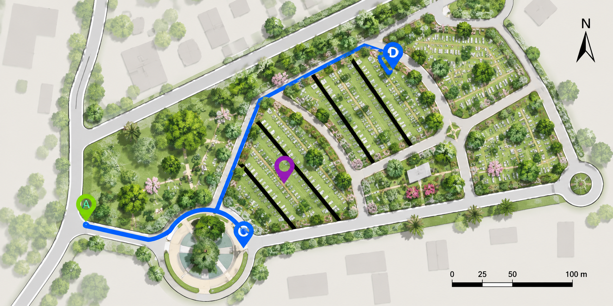

Taller5. Demog.Humana

Introducción
La demografía, la ciencia que se dedica al estudio de las poblaciones humanas, desempeña un papel fundamental en la comprensión de la historia y evolución de nuestra especie, Homo sapiens. Uno de los métodos más fascinantes para analizar la demografía de poblaciones pasadas es el uso de tablas de vida estáticas, las cuales proporcionan un vistazo detallado a la mortalidad y la esperanza de vida en un momento particular en la historia.
Las tablas de vida son herramientas esenciales para la demografía, desempeñan un papel fundamental en la comprensión de la dinámica de poblaciones y de su calidad de vida. Estas tablas proporcionan un retrato detallado de la mortalidad y la esperanza de vida en diferentes grupos de edad, lo que permite a los investigadores analizar y comparar las características demográficas de poblaciones humanas a lo largo del tiempo y en diversas regiones geográficas.
Como señala Coale (1972), pionero en el campo de la demografía, “las tablas de vida son un registro histórico de la experiencia de una población con respecto a su mortalidad” y, por lo tanto, son una herramienta invaluable para rastrear la evolución de las poblaciones. Además, las tablas de vida estánticas, que se centran en una cohorte específica en un período dado, ofrecen una visión única de la estructura de edad y los patrones de mortalidad en un momento concreto.
Como señala Wachter (2014), “las tablas de vida estáticas son herramientas esenciales en la investigación demográfica, permitiéndonos desentrañar los misterios de cómo las poblaciones humanas han evolucionado a lo largo del tiempo”. En palabras de Carey (2001) “las tablas de vida estáticas nos brindan una visión instantánea y detallada de cómo las poblaciones están estructuradas por edades y géneros en un momento particular, lo que es fundamental para comprender los desafíos demográficos y sociales que enfrenta una sociedad en un período histórico específico”.
El presente taller tiene como objetivo elaborar tablas de vida estáticas y analizar su aplicación en el análisis de poblaciones humanas, centrándose en su capacidad para revelar tendencias históricas y diferencias en la esperanza de vida y las tasas de mortalidad, siguiendo los principios definidos por la Sociedad Ecológica de América (ESA) en su enfoque interdisciplinario para la investigación demográfica (Ellis et al., 2012). A través de este análisis, se valorará la demografía de Homo sapiens, en un período específico en el pasado, en muestras tomadas de cementerios, para brindar información sobre las tasas de mortalidad, la distribución por grupos de edad y la esperanza de vida al nacer.
Requerimientos del Informe
modificada de González et al. (2023)
Paso 1: Resumen, introducción y metodología del informe.
Título del taller. Redactar un título, acorde al ejercicio realizdo.
Resumen. Resumir en un párrafo, la ubicación de los cementerios evaluados, el objetivo del trabajo, la metodología empleada y los resultados encontrados. Incluir tres palabras clave al final del resumen.
Introducción. Relacionar estudios realizados sobre el tema, a nivel mundial, nacional y local. Finalizar con el objetivo del trabajo (pude incluir las hipótesis a evaluar).
Metodología del informe. Explicar cómo fue el diseño de muestreo en cada cementerio, así como el análisis de datos realizado. Incluir fotos y un dibujo del croquis realizado en los sitios censados.
Paso 2: Recopilación de datos del cementerio
Se requieren datos de las fechas de nacimiento y defunción, así como el género de las personas censadas. Organizarse en grupos de tres estudiantes, tomar datos de mínimo 200 tumbas seleccionadas al azar. Si es un mausoleo (tumbas familiares), tomar datos de una sola tumba. Tabular los siguientes datos:
| No | Año de nacimiento | Año de Muerte | Edad de muerte | Sexo F (Fem), M (Masc) |
Observaciones |
|---|---|---|---|---|---|
| 1 | 1960 | 1980 | 20 | F | |
| 2 | 1970 | 2010 | 30 | M | |
| 3 | 1950 | 2020 | 70 | M |
Cada grupo debe tabular los datos en el siguiente enlace, posteriormente se debe descargar la tabla en formato xlsx y anexarla al informe: Enlace_tabla
Diseñar un croquis del cementerio, con la ubicación de las tumbas censadas. Este documento debe ser cargado en la asignación del taller.

[Ejemplo del diseño de muestreo del cementerio Jardines de Jerusalen de Santa Marta. {.smallcaps}
Paso 3: Resultados del informe. Estimadores demográficos por cada cementerio (qx, lx, Sx, ex).
: Para construir la tabla de vida estática, hay que clasificar a las personas fallecidas en diferentes grupos de edad. Esto puede hacerse en rangos de 10 años. Son tres tablas de vida (tv): (1) tv general, (2) tv de hombres y (3) tv de mujeres. Ej. para hombres:
Grupo de edad 0-9 años
Grupo de edad 10-19 años, hasta 90-99 años
| Clase de Edad | Frecuencia de Hombres | Cohorte Ficticia (Número de vivos) |
|---|---|---|
| 0 - 9 | 10 | 500 |
| 10 - 19 | 30 | 500 - 10 = 490 |
| … | ||
| 90 - 99 | 5 (Total: 500) |
Insertar columnas adicionales para calcular los siguientes estimadores:
- Proporción de sobrevivientes (
lx).
- Probabilidad de sobrevivientes (
Sx). </b>
- Esperanza de vida (
ex)
Nota: Para cada cementerio, analizar los siguientes insumos:
Supervivencia y esperanza de vida de la población total. Analizar cómo se presentó la supervivencia y la esperanza de vida, para los sexos combinados. Incluir figuras con sus leyendas (párrafo 1) y la explicación de patrones encontrados (párrafo 2).
Supervivencia y esperanza de vida en hombres y en mujeres. Hacer lo mismo que lo anterior, pero por cada sexo.
Graficar las siguientes curvas de sobrevivencia (lx) para:
Población total
Muestra de Hombres
Muestra de Mujeres
Incluir figuras con sus leyendas (párrafo 1) y la explicación de patrones encontrados (párrafo 2). Analizar la gráficas e interpretar las relaciones y las diferencias.
Proporción de sobrevivientes para cada clase de edad (lx).
Se calcula dividiendo el número de personas sobrervivientes en su clase de edad, por el número total de personas nacidas en ese grupo. Ej: grupo de edad 0-9 y de 10-19 años:
Tamaño inicial de la población (No)
Tamaño de la población en la clase de edad evaluada (Nx)
Probabilidad de supervivientes
lx = Nx / No
lx(0-9 años) = Nx / No = 500 / 500 = 1 (100%)
lx(10-19 años) = Nx / No = 490 / 500 = 0.98 (98%)
Probabilidad de supervivencia ara cada clase de edad (Sx).
La probabilidad de sobrevivientes (Sx) hasta una determinada edad se calcula multiplicando las proporciones de sobrevivientes de cada grupo de edad sucesiva. Ej: probabilidad de sobrevivir hasta los 10-19 años:
Tamaño de la población en la clase de edad evaluada (Nx)
Tamaño de la población en la clase siguiente (Nx+1)
Probabilidad de superviviencia
Sx = Nx+1 / Nx
Sx(10-19 años) = Nx+1 / Nx = 490 / 500 = 0.98
Otra forma de calcular Sx:
Sx(10-19 años) = lx(10-19 años) = 1 * 0.98 = 0.98
Esperanza de vida al nacer (ex):
La esperanza de vida al nacer (ex) se calcula sumando las probabilidades de sobrevivir a todas las edades y luego invirtiendo el resultado. Ej: Supongamos que hemos calculado Nx hasta los 100 años.
Promedio de individuos de cada clase de edad x a la siguiente clase x +1 (Lx)
Sumatoria de los Lx (Tx)
Esperanza de vida
ex = Tx / Lx
Lx(10-19 años) = Lx = (Nx + Nx+1)/2 = (500 + 490) / 2 = 495
ex = (⅀ Lx) / Lx.
Cuestionario
Cohorte ficticia y significado de N_x. Explicar por qué, en una tabla de vida estática, el cálculo N_x=\sum_{y\ge x} n_y se interpreta como una cohorte ficticia. ¿Qué supuesto ecológico o demográfico permite esa lectura?
Interpretación de l_x, S_x y q_x. Con base en la tabla de vida del primer cementerio, describir qué representa cada uno de los siguientes estimadores y cómo se relacionan entre sí: l_x, S_x, q_x. Indique qué patrón esperaría observar si existiera alta mortalidad infantil.
Último intervalo abierto. ¿Por qué el último intervalo se considera “abierto” y por qué se aproxima con L_\omega \approx \tfrac{n}{2}N_\omega? Explicar qué tipo de sesgo se produciría si se tratara el último intervalo como cerrado.
Curvas l_x y e_x. Interpretar conjuntamente las curvas de supervivencia l_x y esperanza de vida e_x. ¿Qué indica que l_x caiga lentamente al inicio y más rápido al final? ¿Cómo se refleja eso en e_x?
Comparación por sexos. A partir de las curvas y del estimador e_0 por sexo, explicar por qué una diferencia visual entre curvas debe respaldarse con un análisis de incertidumbre. ¿Qué aporta el bootstrap a esta comparación?
¿Qué tipo de prueba estadística se puede realizar para comparar la supervivencia l_x y la esperanza de vida e_x entre sitios y sexos por rangos de edades? Explique cómo sería ese procedimiento.
Cómo se puede calcula el tamaño mínimo de muestra y la prueba de potencia para la tabla de vida de este taller, con el objeto de definir cuántas tumbas deberían censarse para obtener una estimación más precisa de (i) la esperanza de vida al nacer - e_x y (ii) la supervivencia - l_x.
Discusión de los resultados.
[Imágen modificada de Andres Acosta]
Discutir los resultados encontrados, con los de otros estudios locales y en Colombia. De igual forma, la diacusión debe dar respuesta a las siguientes interrogantes y discutirlas con otros interlocutores nacionales o internacionales:
¿Cuál de los dos sexos es más longevo?
¿En cuáles clases de edad hay mayor esperanza de vida?
¿Qué disciplinas complementarias a la ecología analizan estos trabajos y que han encontrado?
¿Qué estrategias sugiere que se pueden inplementar para mejorar la supervivencia y la esperanza de vida en la ciudad?
Citas Bibliográficas
Acsádi, G. Y., & Nemeskéri, J. (1970). History of human life span. Budapest.
Bonilla, M. y Guillot, G. (2003). Notas de clase: Prácticas de Ecología. Universidad Nacional de Colombia.
Ellis, E. C., Kaplan, J. O., Fuller, D. Q., Vavrus, S., Klein Goldewijk, K., & Verburg, P. H. (2013). Used planet: A global history. Proceedings of the National Academy of Sciences, 110(20), 7978-7985.
Coale, A. J. (1972). Growth and Structure of Human Populations: A Mathematical Investigation. Princeton University Press.
Coale, A. J. (2015). Growth and structure of human populations: a mathematical investigation (Vol. 1333). Princeton University Press.
Dong, X., Milholland, B., & Vijg, J. (2016). Evidence for a limit to human lifespan. Nature, 538(7624), 257-259.
González-Narváez, S., Peñafiel, L., Ríos, A., Ruíz, J. 2023. Historia a través de las tablas de vida: Análisis demográfico del Homo sapiens en cementerios de Santa Marta, Colombia. Informe de la asignatura Ecología 1. Programa de Biología. Universidad del Magdalena. 28 p.
Manton, K. G., Stallard, E., & Tolley, H. D. (1991). Limits to human life expectancy: evidence, prospects, and implications. Population and Development Review, 603-637.
Murdock, S. H. (2008). Applied demography in the 21st century. D. Swanson (Ed.). Netherlands: Springer.